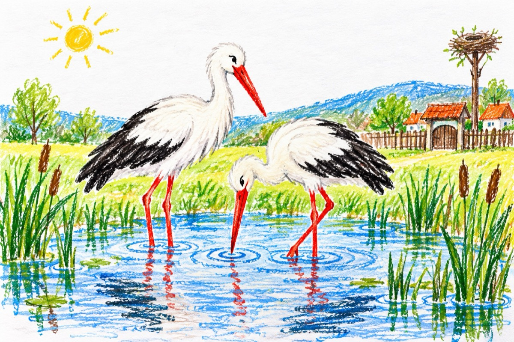

Cocostârc și Cocostârca
Lin zburând în vârf de cer
Câmp de bălți și ierbi privind,
Fiindcă-i iară primăvară, ce ai vrea să îți ofer?
Spuse domnul cocostârc, vesel lumea admirând.
Cocostârca-n piruetă printre palele e vânt,
Își trecu prin pene-o rază,
Și pe bolta de lumină, către sat luă avânt.
Vreau din nou pe stâlpul porții, să ne facem vechea casă,
Și-un cuibar printre copii, dornici iar să ne privească.
Vreau de-asemeni să se știe c-am aflat de bănuială,
Că în sat lumea ne-așteaptă și e bine ca să știi,
Să aducem primăvara,
Și în lume mulți copii.
Cocostârc și cocostârca,stau acum muiați în baltă
Gângurind de tinerețe și în taină pescuind,
Și din când în când se-nalță, lumii visele zidind.
Vasile Groza
Apare și în: Poezii cu animale.